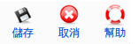

編輯使用者狀態
使用此功能: Components -> EventList -> Reguser -> 點擊使用者mail
Super Administrator Administrator Manager

儲存: 儲存這次的修改後,跳回上一頁.
取消: 放棄這次的修改.
幫助: Opens this help screen.
參加: 可更改使用者參加狀態.
黑名單: 可決定使用者是否列入黑名單.
note: 對於該使用者的註記
 Super Administrator
Super Administrator  Administrator
Administrator  Manager
Manager